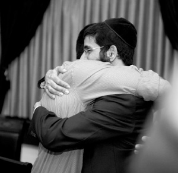

Home Away from Home
Buenos Aires is a large city that attracts numerous tourists including Israelis and many Jews. A Chabad house was opened just for them by Menachem Sharabi and his wife Rochel.

Sunday morning. Buenos Aires is still sleeping. The streets are silent except for the occasional noise of rustling trees. A car drives by now and then with rowdy youngsters returning from a night of entertainment. The Rebbe’s shliach and director of the Chabad house for tourists, R’ Menachem Sharabi, has slept only a few hours, tired from a Shabbos packed with activities, and he is already heading toward his Chabad house.
Outside, it is still dark. Stars twinkling in the sky and the faint light of the street lamps light his way. When he arrives at his destination, about a dozen mochileros (backpackers) will be waiting for him at the door. When the door opens, they will all go inside, some of them bleary-eyed after a night of no sleep and some alert after just waking up. They will all sit down and enjoy some coffee and cake.
After some pleasantries, they will turn to R’ Sharabi who will explain the importance of eating kosher food or he will talk about other relevant topics.
“This is the sixth week that this improvised shiur on Sunday morning is taking place. I decided to forgo some hours of sleep in order to make it happen,” said R’ Sharabi. He heard about a lot of tourists who spend Motzaei Shabbos out till the wee hours and then eat breakfast in treif restaurants, so he decided to do something about it.
“I was very perturbed by this. I can’t stop them from going out and having a good time but I can provide kosher food. At the Chabad house, we operate a restaurant and grocery store. We advertised among the tourists that they can come and eat at a bargain price while listening to a shiur in Chassidus. This week, twelve people came and last week there were fifty. Even if just one came, it would be worthwhile.”
This shiur, which starts the week, is the first in a series of shiurim given every day. “Most of the shiurim are given one-on-one or in a group when one tourist poses a question and we turn the answer into a shiur.”
The Chabad house for tourists in Argentina has been in operation for six years with thousands of Israelis passing through. Buenos Aires is one of the most modern and beautiful cities on the South American continent. It has no less than ten Chabad houses that target different populations.
R’ Sharabi’s Chabad house is a three-story structure and it has a lending library, a shul, a restaurant and an office. It is a source of light for all Hebrew speaking people in the city.
On Shabbos, the Chabad house hosts about 150 backpackers. During the week, young people stop by and feel that the Chabad house is their home. The work increases over the Yomim Tovim. Pesach and Rosh HaShana are huge events for hundreds of tourists. “We emphasize good gashmius along with a program packed with ruchnius.”
SHLICHUS FROM DAY ONE
R’ Menachem Sharabi was born and raised in B’nei Brak, far from the experiences of a shlichus in Argentina. His strong commitment to shlichus developed right after his year on K’vutza, when he went on shlichus to Bangkok to help the shliach, R’ Nechemia Wilhelm.
“I was on shlichus for nearly a year in Thailand. We were a group of bachurim, most of whom are on shlichus today. We held the first seder in Laos. Along with the many difficulties on shlichus, there is tremendous satisfaction knowing that you are in the king’s army and can have an impact on Jews and draw them close to Torah and mitzvos. I was committed to returning to Thailand after I married.”
He ended up marrying Rochel Nacca from Buenos Aires, where they married and where the couple lived for the first year of their marriage.
“One day of Chol HaMoed Pesach, a Lubavitcher approached me and said he heard that I was looking for a place of shlichus and asked why I was looking to go to distant locales. For Pesach that year, they had koshered a hotel where wealthy people who are close to Chabad were staying. These wealthy men had decided together to fund a string of Chabad houses for Israeli tourists in South America. He proposed that I suggest to the shliach, R’ Tzvi Greenblatt, that I work on shlichus here in Buenos Aires, reaching out to Hebrew speaking people and tourists.”
R’ Sharabi liked the idea and after receiving the Rebbe’s bracha he spoke to R’ Greenblatt. Actually, even before that, he and his wife had started arranging Shabbos meals for tourists. The rest of the week, he went around to the hostels where Israeli tourists stayed, put t’fillin on with them, and spoke to them about Judaism.
His proposal was accepted and R’ Sharabi became a shliach. From the start he felt the growing pains, but along with the difficulties he saw divine providence and felt that he had the Rebbe on his side.
“A few weeks before Tishrei, we were already in touch with many tourists. We looked for a nice place where we could hold the t’fillos and meals on Yom Tov. The location had to be near where the Israelis are concentrated. Unfortunately, we couldn’t find anything. Either suitable places were not available or they were asking for a lot of money. R’ Greenblatt finally connected me to someone and through him we got to a run-down old shul which had been closed for a long time.
“The gabbai was happy to give me the place. When I went to check it out, two days before Rosh HaShana, I discovered a wreck and a lot of dust. Along with all the other things that had to be done Erev Rosh HaShana like preparing the food, bringing Siddurim and Chumashim, borrowing Sifrei Torah, and doing massive publicity among the Israelis, we started working with some tourists who volunteered to help clean up the place. We scrubbed it, fixed the lighting, and made it presentable.
“Hundreds of Israelis came for the t’fillos and meals. This was our first significant activity on shlichus.
“It was very rainy on Yom Kippur. After a few hours of rain, we had an electrical short. We davened Mincha and N’ila with a few dozen tourists by the light of a yahrtzait candle. The atmosphere was magical and somber. The darkness only added to the mystique.
“I found out after the Yomim Tovim that the shul had been sold and stopped functioning as a shul. I felt that the sale was delayed until after Yom Tov so we would have it for that period of time.”
Right after Simchas Torah, they needed to find a building for a Chabad house where all activities could take place. A building was located after an intensive search and a Chanukas Ha’bayis was held a few weeks later with the participation of many tourists and members of the Chabad community.
“Our slogan, from our first day on shlichus, was: Beis Chabad – Your Home Away from Home. The idea is to have every Israeli who comes to Buenos Aires come to us not only if he needs something or has a question. In addition to all the usual services of a Chabad house, we provide tourists with lists of cheap hostels, products which can be bought in stores that are reputably kosher, which Chabad houses are on their route, and even touring suggestions.”
If you ask R’ Sharabi what are the most moving moments at the Chabad house, he will tell you that they occur during unofficial times, in one-on-one discussions with tourists and random encounters on the street.
“Every Thursday we have a ‘meat night’ barbecue at the Chabad house. Argentina is known for its good meat, the restaurants here take pride in it, and our goal is to inform tourists that they can eat good quality meat which is also kosher. Dozens of tourists join us every week.”
COMING FULL CIRCLE
R’ Sharabi told us the following story which, to him, is a highlight of shlichus. It’s a story about hard work, ingratitude, but has a great ending.
“We had a girl staying with us who was spending a long time touring South America. Her family roots are in Argentina. She knew the language and had really integrated into the local culture. When she came to the Chabad house for the first time, she knew nothing about Judaism and Jewish traditions. The one who invited her to come was an Israeli she met who recommended it. She soon showed a tremendous interest in Judaism.
“I can’t forget how surprised I was when she did not even know what Sukkos is and what the mitzvos are. Even kibbutznikim know about the holiday but she needed everything explained. In the beginning, she would come and borrow books from the Chabad house. Then she came more frequently and became an integral part of the Chabad house.
“We had an Israeli staying with us at the time, who was the son of a rav of a yishuv in northern Israel. He had gone off the derech and began his reconnection to his roots with us. Despite the distance he had gone with us, it was amazing to see how he still retained remnants of opposition to Chabad which he had acquired in his previous ‘gilgul.’ Since we were not always available to explain things, the girl learned a lot from him. He knew all about Torah and mitzvos and he taught her and explained many concepts in Judaism.
“After a period of time, she began to really strengthen her involvement. I won’t forget the first hachlata she made, the Asher Yotzar bracha. She would say the bracha with great concentration. I wish that my N’ila on Yom Kippur looked like that … That year, we arranged a Moshiach Seuda for the first time. In previous years, the Israelis who celebrate just one day of Yom Tov, were busy with their weekday activities. But the way it came out that year, the eighth day of Pesach was on Shabbos.
“Bachurim from the local yeshiva came to the Chabad house and we held an unforgettable event. We sang the niggunim of the Chabad Rebbeim with the tourists joining in. It was a very uplifting atmosphere. Usually, people are eager to end Yom Tov as soon as they can, but that year, we made Havdala three hours after the stars came out and the Chabad house was full of young people. The girl was also there and was very moved. Two days later, she had to return to Eretz Yisroel.
“Then, to my consternation, I overheard the wayward-returning young man tell her that he would check out for her where Litvishe rabbis, far from Chabad’s outlook, give lectures. I was really annoyed. She had heard about the Creator for the first time when she walked into the Chabad house, and she had become religious because she had walked into the Chabad house, and now this man is directing her to those who fight us at every opportunity?!
“My wife and I decided to take action. We invited her to a goodbye party. During the meal, we spoke a lot about the significance of a Nasi Ha’dor, what a Rebbe is, what Moshiach is, and what Chassidus innovated. I felt I had to do this and if, afterward, she would take a different path, that would be a sign that her neshama was not chosen by the Chabad n’siim.
“Two days later she left for Eretz Yisroel and I decided it was time to deal with the guy. At the Yud-Beis Tammuz Chag Ha’Geula farbrengen, which took place two months later in Tomchei T’mimim, I asked him to join me. R’ Moshe Farkash, the mashpia, was farbrenging. As though in our honor, it was an outstanding farbrengen, the messages were powerful, the bachurim got up and danced at a certain point with incredible Chassidishe d’veikus, and he was very impressed. When we left, he told me that he did not know that there was such powerful depth in Chabad. After that farbrengen, he changed his views from one extreme to the other.
“We arranged to learn Chassidus together and he, who had already learned a thing or two in life, was astounded each time, more and more, until he became a Lubavitcher. He now lives in Buenos Aires and is a fine Chassidishe young man who learns in the kollel. He is married to a girl from a Chabad family in S Paulo, Brazil.
“The girl kept in touch with us. She had difficulties, mainly with her parents who did not like her new religiosity. We guided her to respect them and not show disrespect in any way.
“Several months later, upon our suggestion, she went to learn at the Machon Alte School for baalos t’shuva in Tzfas and became a Chabad Chassida. But the story is not over yet. At that time, a certain bachur who we, along with R’ Ofer Kripor of Cuzco, had been mekarev, went to learn in yeshiva in Tzfas. The two of them knew one another from Argentina and had toured together. When they realized they were both in Tzfas and had become Lubavitchers, they decided to organize an evening for all their friends who had traveled in South America.
“They invited R’ Yair Calev and had a most uplifting Shabbaton. Throughout the Shabbos, friends pointed out how the two of them made a good couple, but she felt she hadn’t learned enough yet. That week, she wrote to the Rebbe about something else and the answer she opened to was enlightening. The Rebbe wrote that the goal of a Jewish person is to establish a home and he did not understand why this was being postponed. She knew good and well what the Rebbe was referring to.
“At the end of the week, the mashpia of that bachur called her and told her of an identical answer that the bachur had opened to, with the Rebbe importuning him not to wait to establish a Jewish home.
“They married on 29 Kislev this year in a Chassidishe wedding in Kfar Chabad. When they informed me of the upcoming wedding, I cried tears of joy. I remembered the journeys they had both made, having seen them at the outset with their doubts and hesitations and was overjoyed at how it all came together.”
SUCCESS IS EVENTUAL
There are successes and hardships but R’ Sharabi doesn’t only focus on results; he also acknowledges the process which entails doing a favor for another Jew. That itself is satisfying.
“About six years ago, when we were just starting out, a couple came to see us. He was a Yemenite who grew up in a traditional home, while his wife came from a home cold to Judaism. At the Chabad house, they reversed roles and she was the one who pushed us to draw him close to Judaism.
“He was an intellectual type and he wanted to understand everything intellectually. I refused to give an inch (laughing) and I, who also grew up in a Yemenite home, was no less stubborn than he was. When they left the Chabad house I felt a sense of loss. I had invested so much and I felt that I hadn’t accomplished anything.
“A few months later, I called his parents’ because I wanted him to send a video message for a video compilation we were putting together at the time. His mother answered the phone and she asked who was calling. When I said who it was, she jumped for joy. ‘You should know,’ she said, ‘that thanks to you, our son is making Kiddush every week. He came back from Buenos Aires completely different.’ I was touched.
“In the video he made of himself, he said that at first he had gone to the Chabad house only because he thought the food on Shabbos was free, but after a few weeks the Jewish messages and values began to sink in.”
THE PLAGUE OF ASSIMILATION
The thing that most disturbs R’ Sharabi is the assimilation between Israelis and local gentile women. “Just last Shabbos, one of the mekuravim who is a close friend and has become like a brother to me, told me he had split up with the gentile woman he had been living with for five years. He thought I’d commiserate but I was so excited that I stood up and yelled, ‘mazal tov!’ He was taken aback and his face looked like the color of a tomato. I told him why I was so happy. He is a fellow in his thirties and my wife and I are trying hard to find him a good shidduch.
“The gentiles here look like Israelis and many of them are reminiscent of Israelis in personality. That is why they readily connect. This isn’t India or Thailand where most Israelis can’t truly relate to the locals. Here, the mentality is the same and that makes it much harder. Israelis don’t fully understand the problem of assimilation. At the Chabad house we have two young guys who have been with us for quite a while. They participate in programs, are traditional, but are married to gentile women.
“It is astonishing that they do not see the contradiction between keeping Shabbos and putting up a mezuza and living with a gentile. We recently established a Tanya shiur with them and I hope that will help.
“A few days ago, I was invited to put up mezuzos and to participate in a Chanukas Ha’bayis by one of the Israelis who comes from a traditional Sephardic home. He prepared for two days for the event, buying a lot of kosher food, bringing Siddurim and s’farim with sections from the Zohar which are customarily read on an occasion like this. He was so excited that he put on a kippa two days in advance. But with all this, he is married to a gentile woman.
“We can smile and be polite, but we have to be clear about assimilation being something bad. I don’t hide my pain from these Israelis. A few days ago, the owner of a local hostel called me. She is a gentile woman married to an Israeli. She said she was about to give birth to their first child and her in-laws were there and insisting on a circumcision. I explained to her the absurdity in what she was asking.
“‘Your son is not Jewish, so why should he undergo circumcision? If they still insist, a doctor should do it. I and the Chabad house won’t be involved. I do not know a religious ritual mohel who would be willing to circumcise your son.’ It wasn’t easy for me to talk in this way because she lets us come to the hostel and work freely with the Israeli guests who are there.”
MONEY FROM HEAVEN
Last year, the Chabad house was heavily in debt.
“It was hard to make the rental payments for the building we were in,” said R’ Sharabi. “Backpackers are not exactly known for their generous donations and we were facing a crisis. Donors who had generously given in the past limited their donations, and it reached a point where we had to leave the building before Yom Tov. Any attempt to negotiate with the owners or to set up a payment plan failed.
“Throughout this time I wrote to the Rebbe and each time we opened to encouraging answers. One time, the Rebbe wrote that there were obstacles but they were a preparation for a personal Geula like the Geula from Mitzrayim. I waited for a miracle but it wasn’t coming and whatever was going on was the opposite of Geula. Two days before Rosh HaShana we received a court order saying we had to vacate the building, no postponements.
“When I saw it had reached this point, I didn’t want to get entangled with the courts and so I spoke to a lawyer, who davens by us, and told her the situation. She called the lawyer who was taking care of the case for the owners and was able to arrange that we could stay there for Yom Tov. Immediately afterward we would have to fix the place up and within two months we would give it back to the owners, and then they would absolve the debt.
“After Yom Tov, we were miraculously able to raise a lot of money for renovations, and we began looking for a new place. First we found a big house in a quiet area, a place where we ourselves could live and save on expenses, but a day before we signed a contract, the real estate agent called and said that the municipality wanted the building and was offering more money for it.
“At the last minute, we found a nice house that perfectly met our needs with a big yard and in an excellent location. The renters wanted a ridiculously low price, half of what we were paying previously. In this respect, we really felt that it was a yetzias Mitzrayim. We breathed a sigh of relief. Last night, my wife and I passed by the house we almost rented and were amazed to see how Hashem had helped us. They had asked for a lot of money which would have dragged us into debt and the building was far from where the Israelis congregate. How many would have bothered going there?”
Speaking of money, R’ Sharabi shared an amazing story of divine providence with us:
“A week and a half before Pesach of last year, the Chabad house coffers were empty. Every year we have provided a beautiful catered Seder. My in-laws who have a salad company give us the food at cost, and we rent a big hall, usually at a five star hotel. But we were afraid we would not be able to do it.
“One day, I went to fundraise in one of the wealthy neighborhoods of the city, but I didn’t make much. When I returned home, I told my wife that our plans were up in the air. In my heart, I asked the Rebbe for help. Despite my despondency, the work at the Chabad house must go on. I went to the Chabad house, this was a Thursday, and saw some tourists sitting there. They picked up on my mood even though I tried to hide it. They insisted that I tell them what was going on, but I did not see how they could help me and I said nothing. They were stubborn and after they pressured me, I told them what was on my mind.
“As I figured, they could do nothing but sympathize. Thursday night, at the barbecue, that group of tourists was there. A guy came over to me and asked to speak to me privately. He said he had just heard from some tourists about our financial woes before Pesach and he wanted to know what it would all cost.
“He said he owned a big lock company in New York and had the means. I gave him an exact accounting and the total was tens of thousands of dollars. ‘I’ll give half,’ he announced. I was stunned. It was the largest donation I had ever received since I opened the Chabad house and till this day. I went home that night and said to my wife, ‘This year, we will have the nicest seder ever.’”
EMERGENCY SERVICES
R’ Sharabi is up to his ears in work. Even this interview, which took place late at night, was constantly interrupted by tourists and important phone calls. In addition to his daily routine, there are constantly unexpected situations that change his plans.
“We are on good terms with the Israeli consulate. One day, I got a phone call from them about an Israeli who was critically wounded in a bicycle accident. He fell into a deep ravine and received a severe head injury.
“As soon as we heard this, we got to work. It took two days until we were able to bring him to a better hospital in Buenos Aires. In the meantime, his parents came from Eretz Yisroel and we provided them with kosher food throughout their stay. We put a picture of the Rebbe near his head and asked for a bracha on his behalf. His father committed to putting on t’fillin as a z’chus for his recovery and his mother committed to lighting Shabbos candles. They were our guests throughout this time until their son was transferred to a hospital in Eretz Yisroel.
“We are still in touch with them and they update us about every positive development. He is in an outpatient rehab and he talks to us via the Internet. We have become family. It turned out that a few days before the accident he had visited the Chabad house, but I did not remember him because of the many tourists that were there that week.”
One of the Chabad house services is visits to Israelis in jail.
“We have a special permit from the Argentine Justice Ministry, the kind that is given to diplomats, which enables us to freely enter prisons and visit prisoners in their cells. Whenever we hear about an Israeli inmate, we make contact with him and see how we can help him. We are in touch with some of them even after they are released.”
R’ Sharabi recounts a recent story:
“Two Israelis came to us for a Shabbos meal. ‘Where are you from?’ I asked. ‘We work in Brazil,’ they said, without elaborating. I did not ask anything further. On Monday that week, I was walking in the Jewish area of the city and saw a big commotion. There were a lot of police cars and people running. ‘What’s going on?’ I asked. Then I heard that the police were looking for me. I nervously approached the scene. There I saw those same two guys in handcuffs, on the ground, unwilling to budge until they called for R’ Sharabi.
“It turned out that they weren’t just working in Brazil; they were high-end smugglers who were arrested there and escaped Brazilian jail and were wanted by Interpol, which led to their second arrest in Argentina. They sat in jail in Buenos Aires for forty-five days, but without an extradition request from Brazil they were freed and became our guests until the embassy arranged their passports. These guys helped us a lot later on and were actually responsible for a number of positive activities that exist till this day at the Chabad house.”
I asked whether the shluchim are careful enough so that manipulative people won’t use them.
“Don’t worry. We are very careful. When tourists want to leave their bags at the Chabad house, we ask them to open them and show us what they contain. We tell them we don’t suspect anyone but we have to be careful.
“At the same time, even tourists who got involved with the law because of crimes they committed are still Jews. We will help them when necessary and won’t ignore them. While being careful we will continue to open our home and our heart to every Jew.”
I asked what the biggest challenge for shluchim who target tourists is. How is their work different than that of a regular Chabad house?
“The challenge is to understand that we will do the work and will usually not see the results. During the summer, we have hundreds of tourists on Shabbos. We put in a lot of work both spiritually and physically. We wash hands together, we say brachos, I say a d’var Torah and a Chassidic story with a message and on Motzaei Shabbos all these hundreds of people go on their way. You have no idea whether anything you said or did affected anyone. We recently opened a group forum on the Internet, but still, each one is far away and it’s hard to keep tabs.
“A person naturally wants to see the results of his efforts. At the beginning of the shlichus, this point was very hard for me, but I taught myself to think about the fact that the work we do is important in and of itself. The very fact that a tourist washes and says a bracha over bread or hears a d’var Torah is enough to give you satisfaction.”
“Just this Shabbos, one of the tourists asked my wife and me when was the last time we had a Shabbos meal alone with our family. We said, six years. Private meals happen only when we visit my family in Eretz Yisroel.
“But what give us strength are the little stories. For example, a tourist from a kibbutz who works as a security guard told me that, despite the difficulty, he managed to fast the entire fast on Yom Kippur even though he was not in shul.
“Last summer, during one of the periods when the tourist season was a little slow, a tourist walked in to the Chabad house who wasn’t that young. He said that he was living in a local hostel and had come to Argentina mainly to relax. He asked whether he could borrow some reading material. I invited him for a cup of coffee and we sat for three and a half hours and talked about every topic under the sun. When we finished, he said he came from Yerushalayim and this was the first time he was talking to a religious Jew.
“We are still in touch and we arranged that when I go to Eretz Yisroel we will meet in Yerushalayim. Even a little thing like that is gratifying.”
As a final question I asked how he manages to connect people to the Rebbe in the brief time they spend at the Chabad house. He said, “First, the shiurim I give to tourists are based on the Rebbe’s sichos. Even those who don’t attend the shiurim cannot miss the big picture of the Rebbe in the Chabad house under which there are quotes from the Rebbe which we collected from Toward A Meaningful Life. For most of the tourists, this is not the first time they are hearing about the Rebbe.
“Second, many of them ask to write to the Rebbe and they put their letter into a volume of Igros Kodesh. We recently had a girl here who was in a bad emotional state. She wanted to write to the Rebbe. I did not see what she wrote and what the Rebbe’s answer was but we saw the results: she changed from one extreme to another!”
Nosson Avrohom. "Home Away from Home." Beis Moshiach, no. 924 (April 30, 2014).